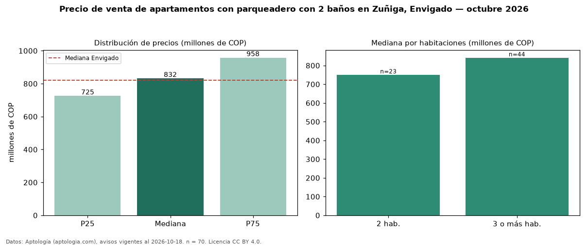

Precio de venta de apartamentos con parqueadero con 2 baños en Zuñiga, Envigado — octubre 2026
COP 832 millones es el precio mediano de apartamentos con parqueadero con 2 baños en venta en Zuñiga, Envigado (n = 70 avisos). Eso es 8 % menos que la mediana de los apartamentos con parqueadero en venta de Zuñiga (COP 900 millones, n = 193); este segmento reúne el 36 % de esos avisos. Por metro cuadrado, la mediana es COP 8,07 millones/m² (n = 70), 6 % por encima de los apartamentos con parqueadero en venta de Zuñiga (COP 7,64 millones/m²). El área mediana anunciada es 107 m². El segmento con más oferta es el de 3 o más habitaciones (44 avisos, mediana COP 842 millones); pasar de 2 habitaciones a 3 o más habitaciones cambia la mediana +12 %. La administración mediana declarada es COP 604.000 al mes (n = 41). El estrato más frecuente es 5 (87 % de los avisos con estrato). La mediana de todos los apartamentos en venta de Envigado es COP 820 millones (+1 % de diferencia). Datos: Aptología (aptologia.com), CC BY 4.0 — https://www.aptologia.com/venta/envigado/zuniga. Archivos: PDF, CSV con las cifras y gráfica PNG.

| Avisos únicos | 70 |
|---|---|
| Percentil 25 | COP 725.000.000 |
| Mediana | COP 831.500.000 |
| Percentil 75 | COP 957.500.000 |
| Mediana por m² | COP 8.069.727 |
Fuente: avisos vigentes de portales inmobiliarios recopilados por Aptología, deduplicados (mínimo 30 avisos únicos por celda). Precios pedidos, no cerrados. Fecha: 2026-10-18.